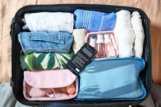
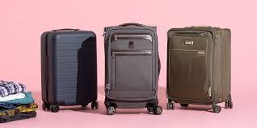
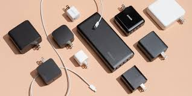
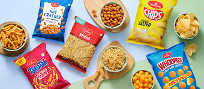
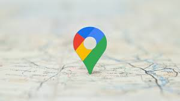
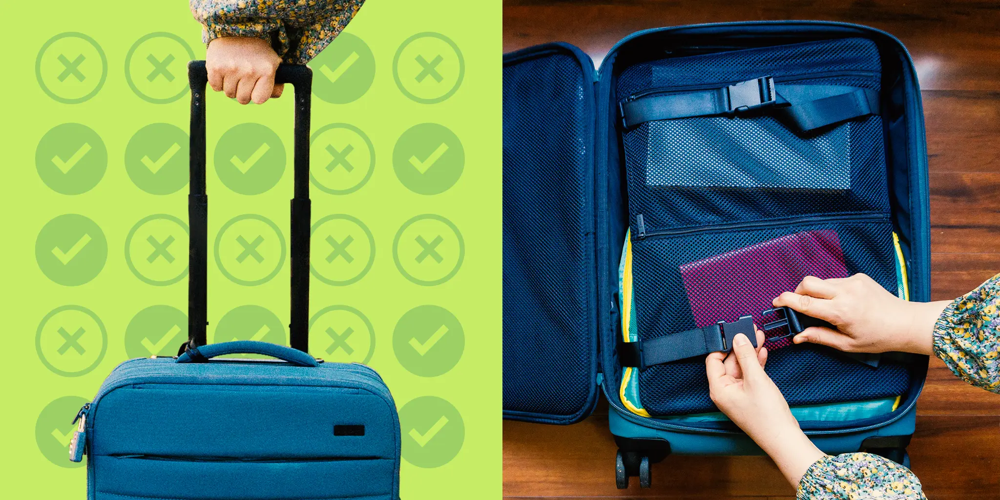
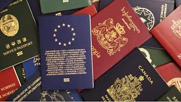

Top 10 Travel Lifehacks
-

1. Pack Smart
Roll your clothes instead of folding to save space and prevent wrinkles.
Packing smart not only saves space but also keeps your luggage organized. Rolling clothes helped me fit an extra week's worth of outfits during a trip to Europe. This technique also reduced wrinkles, saving me time ironing on vacation!
-

2. Use a Carry-On
Travel light to save time and avoid lost luggage.
Traveling with just a carry-on saves time at the airport and avoids the risk of lost luggage. I once made a last-minute decision to take a weekend trip to Paris, and by using only a carry-on, I breezed through security and had more time to enjoy the city!
-

3. Bring a Portable Charger
Ensure your devices are always charged during your trip.
A portable charger saved me multiple times during my travels. Whether it was navigating through a new city or capturing photos, having my phone charged ensured I never missed an important moment.
-
4. Get Local Currency
Withdraw money from ATMs for better exchange rates.
ATMs often provide better exchange rates than airport kiosks. On a trip to Tokyo, using an ATM saved me a significant amount compared to currency exchange counters.
-

5. Bring Snacks
Save money and time by carrying your favorite snacks.
Carrying snacks can save time and money. During a long bus ride in rural Thailand, pre-packed snacks were a lifesaver when food was unavailable nearby.
-

6. Download Offline Maps
Avoid getting lost by saving maps to your phone.
Offline maps saved me during a road trip in Iceland. With no cellular connection in remote areas, I could still find my destinations seamlessly.
-

7. Mark Your Luggage
Use unique tags or ribbons for easy identification.
Adding a bright ribbon to my luggage helped me spot it immediately on the conveyor belt after a long flight.
-

8. Bring a Reusable Bottle
Stay hydrated and save money on bottled water.
Using a reusable water bottle saved me during a trek in the Himalayas. I could refill it at mountain springs, reducing waste and staying hydrated.
-

9. Backup Important Documents
Keep digital copies of your passport and tickets.
Having a digital copy of my passport saved me when I misplaced it during a trip to Bali. I could easily verify my identity at the embassy.
-
10. Arrive Early
Avoid last-minute stress by arriving early at the airport or station.
Arriving early saved me from missing a flight during a busy holiday season. I could check in, clear security, and relax without stress.